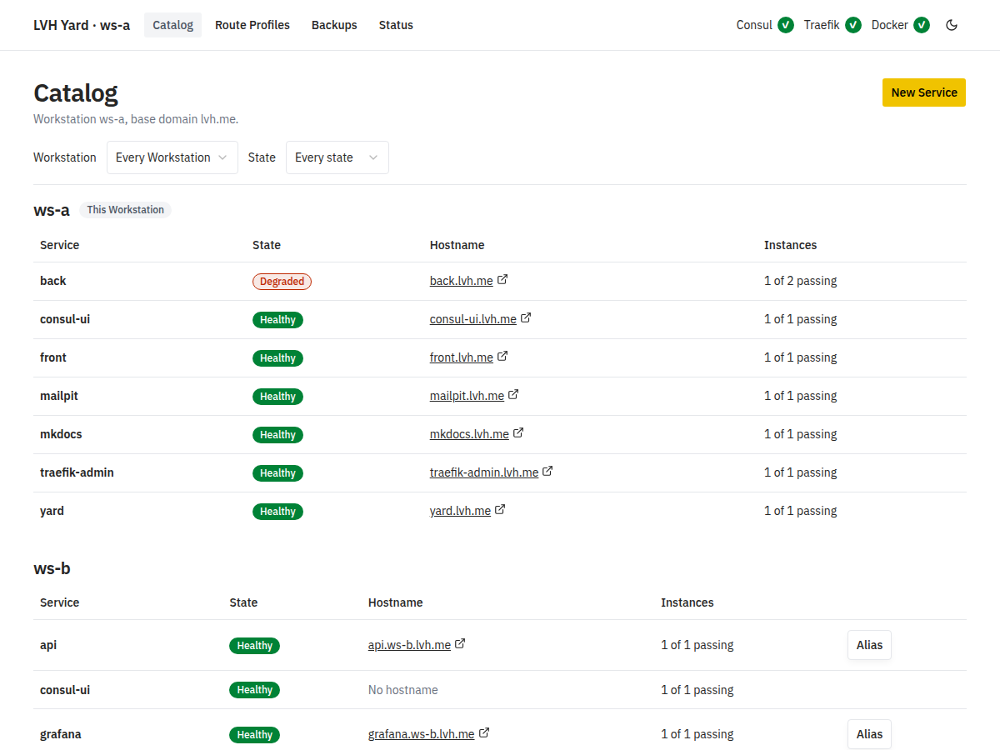
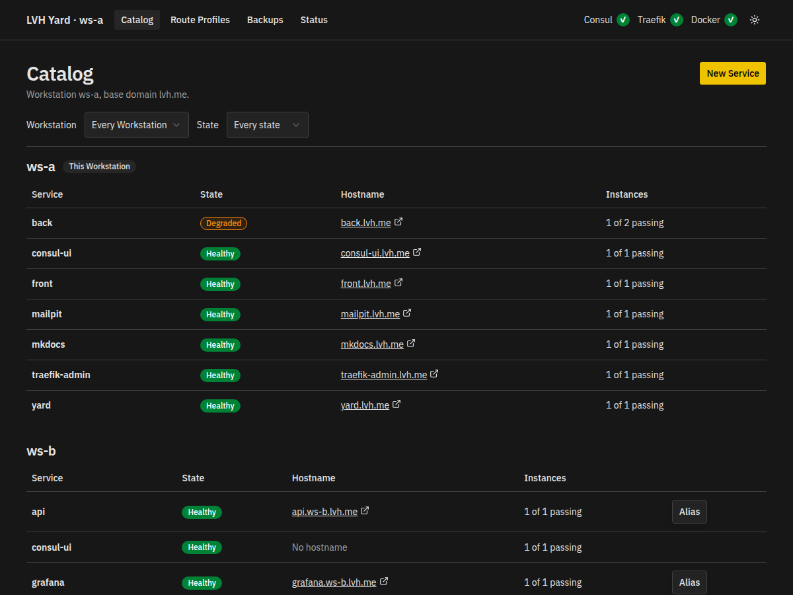
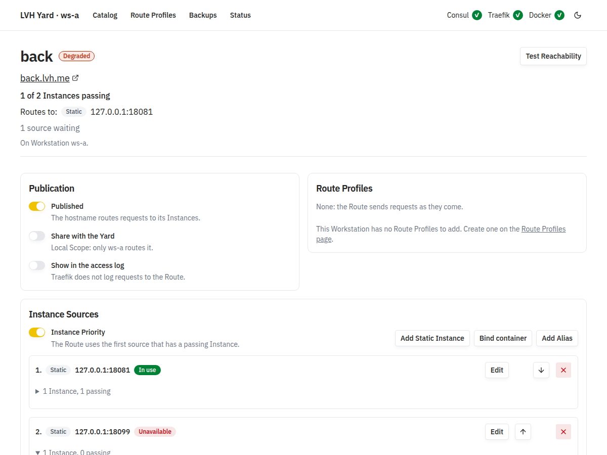
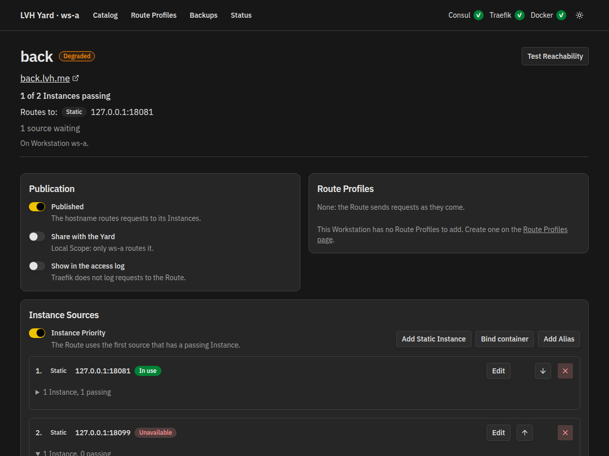

Local virtual host, for your whole LAN
Reach any development service on your LAN by name, not by IP and port.
LVH Yard gives each service that you run on your computers a hostname,
such as http://grafana.lvh.me. It
works for your own computer and for every other computer in your
Yard. It runs Consul and Traefik for you, in Docker.
# Download the archive of your platform from the releases page, then:
$ sha256sum -c SHA256SUMS --ignore-missing
$ tar -xzf lvh-yard-<version>-linux-amd64.tar.gz lvh-yard
$ sudo mv lvh-yard /usr/local/bin/
$ lvh-yard init
$ cd ~/.config/lvh-yard && docker compose up -d
$ lvh-yard status

How it works
A wildcard domain such as lvh.me points every
hostname to 127.0.0.1. Traefik on your computer reads
the hostname and sends the request to the right service.
-
1. Install
Download
lvh-yard. It writes the setup files and Docker starts Consul, the dashboard and Traefik. -
2. Publish
Create a Service. Add its Instances: a fixed address, or a Docker container that LVH Yard follows. Publish it.
-
3. Open
front.lvh.meworks in your browser. Share it with the Yard, and every computer can open it.
# On ws-a: publish a process and a Docker container.
$ lvh-yard service create front
$ lvh-yard register static front --port 3000
$ lvh-yard publish front
$ lvh-yard service create mailpit
$ lvh-yard register container mailpit-1 --port 8025 --service mailpit
$ lvh-yard publish mailpit
# Any Workstation in the Yard sees every Service.
$ lvh-yard catalog
ws-a (this Workstation)
front healthy front.lvh.me 1 of 1 passing
mailpit healthy mailpit.lvh.me 1 of 1 passing
ws-b
grafana healthy grafana.ws-b.lvh.me 1 of 1 passingOne Yard, many computers
Every Workstation on your LAN joins the same Yard with one shared
key. Each one learns the Services of the others. A Service that you
publish with Yard Scope gets a hostname on every Workstation:
grafana.ws-b.lvh.me opens the Grafana that runs on
ws-b.
What it does
-
A name for each Service
Publish a Service on one Workstation, or share it with the whole Yard.
-
Routes that check health
A Service can have many Instances. The Route uses only the ones that pass, so you can test replicas as in production.
-
Docker containers follow their Service
Bind a container or a Compose service to a name. The port that Docker gives it does not matter.
-
Route Profiles
Add Traefik middlewares to a Route: basic auth, IP allow lists, headers, CORS.
-
A dashboard and a CLI
Both show the state, the Instances, the warnings and the reachability tests of every Service.
-
Backups
Export the setup of a Workstation to one YAML file. Import it on the same Workstation or on another one.
See every Instance behind a name
The Service page shows the state of a Service, its Publication, and
the order of its Instance Sources. Here, one of the two Instances of
back does not answer, so the Service is degraded and the
Route uses the other one.


What you need
- Docker with Compose on every Workstation.
-
lvh-yardfor Linux (amd64, arm64) or macOS (arm64). It needs no Java. - Docker is the only container runtime that LVH Yard supports.
Use it on a network that you trust
LVH Yard is a development tool. The dashboard has no login:
anyone who reaches it can change the Services of that Workstation
and reach its containers through the Docker socket. By default it
listens on 127.0.0.1 only.
Read the security policy.
Give your services a name
LVH Yard is open source, under the Apache License 2.0.